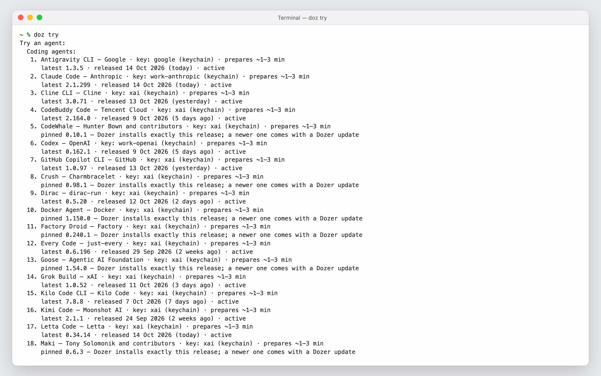

Dozer Sandbox 0.35 - try 42 AI tools in one command
Dozer Sandbox 0.35 runs 42 coding agents and AI tools, each one command away, on your own key from any major provider or through a gateway, with a guide beside every try.
It's on the stable channel now, as 0.35.1. It includes everything from 0.34, which went straight from canary to this release.
Try a tool in one command#
doz try makes a throwaway sandbox for any tool Dozer supports, starts it and puts you in it. The tool gets a new empty folder of its own, a network that reaches its AI model and nothing else, and your key for its provider.
doz try # the list: coding agents, then AI tools, and which are ready
doz try opencode # a try of OpenCode
doz try fabric --rm # delete it when you leaveWhen you leave, it asks whether to sleep, delete or keep it running.

Quick try in the dashboard#
Try → Quick try shows the same tools as cards. Search, or filter by kind and category, and Try now opens its setup: where the tool gets its model, your key and the folder.

A guide beside every try#
A try opens on its Guide: what the tool is, the facts of this try (version, model, network, folder), and the first commands to run. Run types a step into the tool's session; Copy puts it on your clipboard.

42 coding agents and AI tools#
Claude Code, Codex and pi are joined by Gemini CLI, Grok Build, OpenCode, GitHub Copilot CLI, Goose, Qwen Code, Cline, OpenHands, Crush and more coding agents, and by tools such as Fabric, llm, AIChat, ShellGPT, promptfoo and Google Stitch. The manual lists them all, with what each needs.
Grok Build, Factory Droid and Docker Agent now report working and done in the dashboard, as Claude Code and pi do.
Your key, from any provider or gateway#
Use a key from OpenAI, Anthropic, Google or xAI. Or use one key for many models through OpenRouter or Vercel AI Gateway, now offered to every tool that can take an OpenAI-style API. The key stays in your Mac's keychain; the sandbox only ever holds a placeholder. Dozer can also read it from 1Password, AWS Secrets Manager or a command each time it's needed.
doz account add work --openai-key # paste the key when asked
doz account add grok --provider xai --from op://Dev/xAI/credentialThe dashboard's Accounts & keys page is new too. Keys are grouped by provider, with the tools each one serves, and the default chosen in place. A key that stopped working comes first, with what the provider said and how to fix it.

Choose the model#
A try's setup and New Sandbox now have one section for where the tool gets its model: your providers, then the gateways, each with its key. Pick a model from the gateway's own list, or type any model id.
doz models --gateway openrouter claude # OpenRouter's models that match "claude"
doz try opencode --gateway openrouter --model anthropic/claude-sonnet-4.6OpenCode 2, and free models with no key#
OpenCode 2 is the opencode Dozer recommends now; OpenCode 1 stays one word away as opencode@1, and a sandbox you already have keeps its version. Our OpenCode 2 post has what's new in it.
OpenCode Zen's free models need no account and no key at all:
doz try opencode --provider opencode-zenThe picker and doz models show each free model's data terms; some may use what you send to improve their models.
Also new#
doz search aidersays whether Dozer runs a tool, and how, or why not yet.- Tools that serve a web page, and your own dev servers, open in your Mac's browser: the sandbox's Open button, or
doz ports add my-app 3000thendoz open my-app 3000. The page is on this Mac only.
Fixed#
- Icons in the dashboard no longer blink every few seconds.
- The Quick try window opens at once, and Start responds the moment you click it.
- A key its provider refuses now shows as refused, instead of a green "ok".
Upgrade#
doz upgradeNew to Dozer Sandbox? Getting started takes a few minutes.